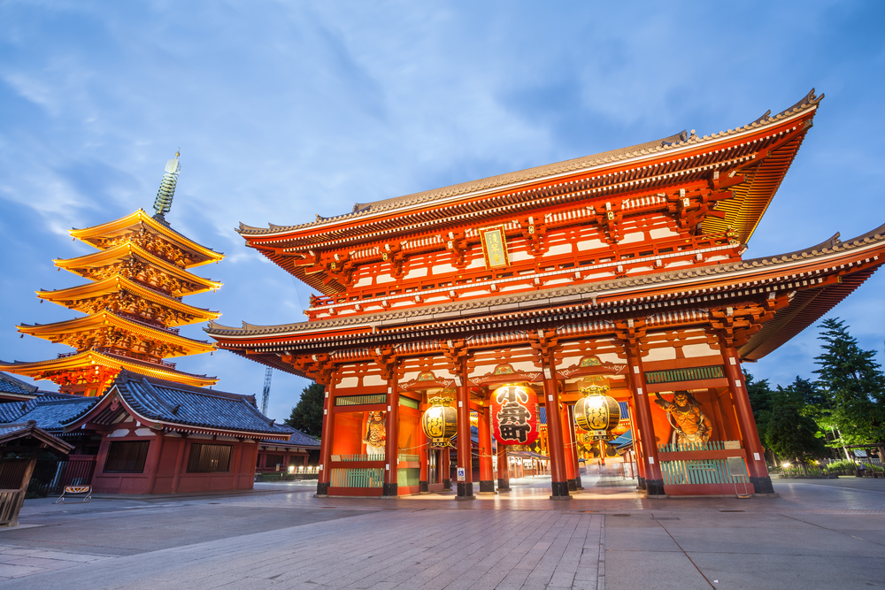
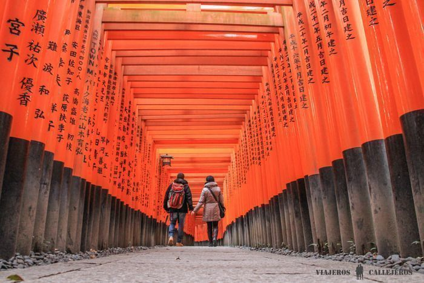
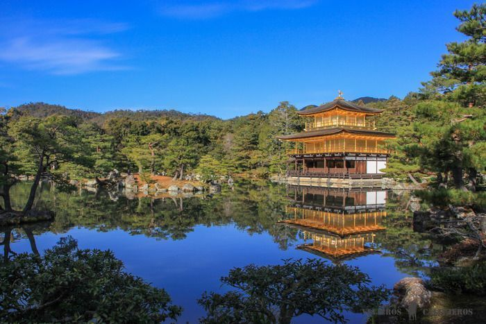
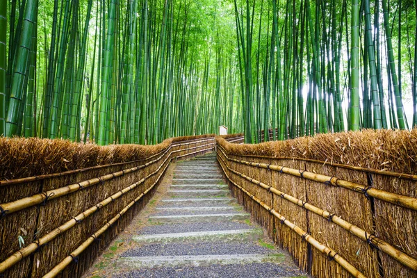

Akihabara es conocido por ser el barrio de la electrónica y la tecnología. Pero en los últimos años fue ganando popularidad también como meca de los otakus, fanáticos del manga y el anime, las historietas y las series de animación japonesas. El epicentro del barrio se encuentra en los alrededores de la estación y en Chuo dori, la calle principal. Los domingos Chuo dori se vuelve peatonal durante la tarde y brinda la posibilidad de vivir una experiencia única caminando por la acera rodeado de gente y luces de neón.

Harajuku es un barrio fascinante, sinónimo de moda y arte en Tokio. No solo tiene boutiques exclusivas en la avenida Omotesando, sino que además es el lugar favorito de los cospalyers y Lolitas, que encuentran muchas tiendas especializadas en Takeshita Street. En las tiendas de Takeshita también hay objetos y ropa creados por jóvenes diseñadores, y las calles del barrio son un verdadero hervidero de galerías y estudios de arte.

A pesar de que muchos de sus edificios son bastante nuevos, ya que fueron reconstruidos después de la Segunda Guerra Mundial, Asakusa es considerado el barrio más tradicional de Tokio. Es famoso por albergar el templo Sensoji, el más antiguo de la ciudad, dedicado a la diosa Kannon. Las mejores fotos de Asakusa las podrás hacer frente al farolillo gigante de la puerta Kaminarimon de Sensoji y en la calle Nakamise, que encuentras una vez que cruzas la puerta. Se trata de una de las calles comerciales más antiguas de Japón y es imposible no tentarse con algunos de sus dulces, artesanías y otros productos típicos.
Podemos decir que Fushimi Inari-taisha es nuestro templo favorito y uno de los lugares que visitar en Kioto imprescindibles. Este santuario construido en el siglo VIII en honor a la diosa del arroz, es famoso por sus miles de toriis rojos o naranjas, que serpentean trazando un camino por la base de la montaña Inari y que han sido donados por particulares y empresas para que el dios Inari les sea favorable.
Kinkaku-ji o el Pabellón Dorado, es un templo zen en el que sobresale su pabellón recubierto de hojas de oro puro o pan de oro. El templo, Patrimonio de la Humanidad, se edificó en 1397, aunque la estructura actual es del 1955 ya que en 1950 un monje con las facultades mentales alteradas le prendió fuego, cuenta con un precioso estanque enfrente llamado Espejo de agua y un jardín japonés, es una de las imágenes de postal de Kyoto.
Pasear entre más de 50 variedades de bambú perfectamente alineadas mientras oyes el susurro del balanceo de los troncos producido por el viento, estamos seguros que será otro de los momentos que recordarás de un viaje a Japón. Este bosque de bambú, planta de gran importancia en la cultura japonesa y oriental, tiene en Arashiyama ejemplares de más de 20 metros de altura que hacen las delicias de los miles de turistas que se acercan hasta aquí cada día.
